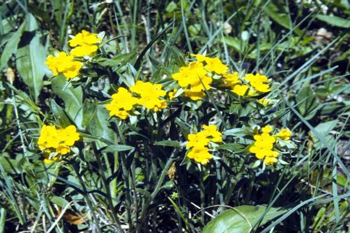
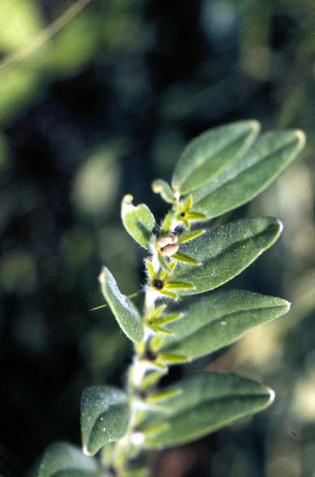

Lithospermum canescens
Family: Boraginaceae
Hoary Puccoon
Swink/Wilhelm #8

FLOWERING: Late April - late July
SEED TIMING: Late June - late July
HABITAT: Prairies
DIAGNOSTIC FEATURES: 6 - 18 inches high. Alternate leaves, lance-shaped to oblong, covered with short, stiff hairs. One-sided, arching clusters of bright orange, tubular blossoms that have five lobes.
TO PICK: 4 small nutlets (up to 3 mm.) resembling bits of pearl-grey stone or bone will roll off easily when rubbed between thumb and forefinger if ripe.